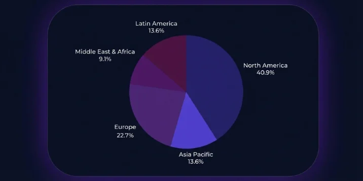
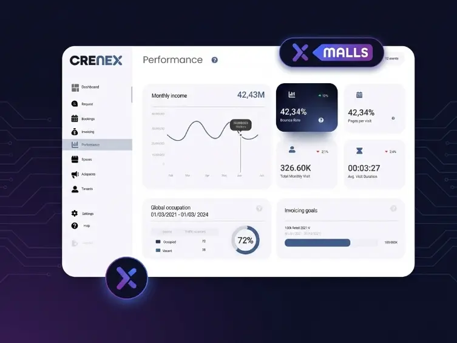

The short-term leasing market is evolving rapidly. With shifts in consumer behavior, technological advancements, economic and social factors shaping the landscape, staying informed about these changes is crucial for professionals in the sector.
Looking ahead to 2026, this article will explore the latest trends that are redefining short-term leasing management and how they are impacting the sector as a whole.
Post-pandemic, the short-term leasing market is evolving rapidly with the push towards digitalization.
Trend 1: Growth of Short-Term Leasing
The short-term leasing market continues to grow globally, with a significant focus on North America.
What is driving this growth? One of the key factors behind this is the increasing demand for flexible rental solutions.
Consumers are seeking alternative accommodation options, whether for vacations, remote work arrangements, or temporary stays. This shift is not limited to residential properties alone but extends to commercial spaces and shopping centers, where short-term rentals have become a popular option for pop-up shops and seasonal businesses, particularly in tourist areas.
The size of the short-term leasing market is estimated to be USD 124.6 billion in 2024 and is projected to exceed USD 477.9 billion by 2037, with a compound annual growth rate (CAGR) of over 10.9% from 2025 to 2037.
Source: Research Nester

North America in short-term rental market is anticipated to hold more than 40,5% renueve share 2037.
Trend 2: Digitalization and Automation in Rental Management
Technology has been at the forefront of the short-term leasing revolution. Digitalization is now a key driver of efficiency, enabling property managers to optimize operations and reduce reliance on manual processes.
Automation tools have become revolutionary elements in this space, managing everything from contract generation to financial tracking.
Benefits of Automation in Short-Term Leasing
Automation reduces the risk of human error, accelerates repetitive tasks, and improves data management. It is no coincidence that nearly 7 out of 10 companies use business process automation solutions to improve end-to-end visibility across different systems.
Beyond administrative improvements, digital tools have also revolutionized rental decision-making. Property owners now have access to data analytics that offer insights into occupancy rates, pricing trends, and tenant behavior.
These insights enable more informed decisions and ultimately increase profitability. And here’s a significant opportunity!
While most companies focus on data, only around 16% are “data-driven.”
Source: SDTimes
Trend 3: Focus on Customer Experience
Customer experience has become increasingly important. Tenants now expect seamless interactions and personalized services, whether they are booking a vacation rental or leasing a commercial space.
Why should companies Enhance Customer Experience in Short-Term Leasing?
Enhancing customer satisfaction directly influences occupancy rates and lease renewals. Here, again, automation plays a crucial role, in facilitating better communication with tenants.
Digital solutions help create a smoother experience for both tenants and property managers. For instance, with automated reminders for rent payments or easily accessible online portals for tenant inquiries.
In commercial spaces like shopping centers, the ability to provide real-time updates and efficiently manage tenant needs has become a competitive advantage.
And to be prepared: as short-term rentals continue to gain popularity, maintaining strong relationships with tenants will be key to maximizing occupancy and revenue.
How the Industry is Adapting
Many industry leaders are already adopting these trends through new strategies and technologies. For example, employing AI-driven tools for tenant management and predictive analytics.
These technologies help forecast demand, optimize pricing, and even tailor offers to the tenant based on past behavior.
This presents a multitude of opportunities for strategically showcasing properties and executing targeted marketing campaigns with precision.
Align with These New Trends Using Crenex
As the short-term rental market evolves, staying ahead of these trends has become essential for businesses. Many companies have already streamlined their short-term leasing processes with Crenex, resulting in improved efficiency and profitability.

Through Crenex’s Marketing Module, they optimize space acquisition, and with the Leasing Module, they manage contracts, billing, and financial tracking efficiently. Both modules seamlessly integrate into a customizable platform tailored to the unique needs of each industry, with a strong focus on shopping centers.
Ready to explore how Crenex can transform your rental process?